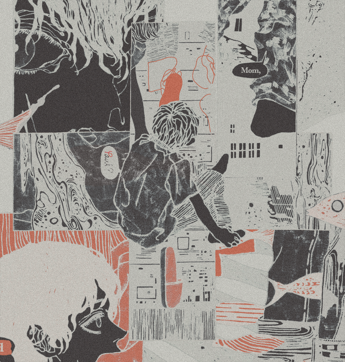

03

TO FIND J
물고기와 천둥번개가 쏟아지는 곳, 괴물과 유전과 놉이 조금씩 섞여 있는 방에서
자신의 키 만큼만 보고 있는 그 어린이는 훗날 내가 아는 모습으로 자란다. 내가
모르는 부분도 알고 싶었다. 다행히 세상이 열렸다.
-
In a place where a lot of fish fall and thunderstorms shake the ground, in a room where The Host, Hereditary, and Nope mingled together, That child who sees only as far as their own height eventually grows into the person I know. I wanted to know different sides of him, and of them, too. Fortunately their world has opened.
-
In a place where a lot of fish fall and thunderstorms shake the ground, in a room where The Host, Hereditary, and Nope mingled together, That child who sees only as far as their own height eventually grows into the person I know. I wanted to know different sides of him, and of them, too. Fortunately their world has opened.
J 를 찾아서
John, 071626-071626, The House
John, 071626-071626, The House

ⓒ 2026 피플즈 PEOPLES All Rights Reserved.